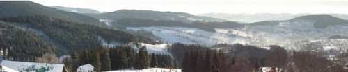

Panoramafotografie: 1. Versuche
Ich habe kurz vor Weihnachten ein wenig Recherche zum Thema Panoramabilder betrieben und mir fest vorgenommen, das einmal auszuprobieren. In der pikturesken, verschneiten Landschaft des Riesengebirges, in deren Nähe ich die Zeit zwischen Weihnachten und Neujahr mit ein paar netten Menschen verbracht habe, ergab sich dann die Gelegenheit dazu. Nun hatte ich kein Stativ dabei und habe alles aus der Hand gemacht, wobei der Trick ist, die Kamera möglichst nah am Körper zu halten, weil man ja selbst quasi das Stativ mit Schwenkkopf imitiert. Eine sehr brauchbare Anleitung findet sich (auf englisch) bei panoguide.com. Wichtig ist natürlich auch, dass die Fotos sich überlappen, damit hinterher das Programm die Überschneidungen bei den einzelnen Fotos berechnen kann, um das Panorama "zusammen zu sticken" ("stitching")
Eben gerade habe ich dann mit dem kostenlosen Windows-Programm Autostitch rumprobiert. Ein weiteres Programm zum Stitchen ist übrigens Hugin.
Im Ergebnis zeigte sich dann, dass eine Art Stufeneffekt entstanden war - ich hatte wohl die Kamera unwillkürlich nach unten gezogen. Hier die "Rohversion", welche mir Autostitch aus fünf Fotos ausgab:
Panorama Rohversion
Wenn man es dann in einem Bildbearbeitungsprogramm beschnitten wird, sieht es schon ganz amtlich aus, aber eben nicht perfekt:

Es gilt also, weitere Versuche zu unternehmen - das nächste mal auch mit Stativ, obwohl ich ganz froh bin, dass ich keines auf den Berg geschleppt habe, im Gegensatz zu den vielen Skifahrern habe ich nämlich keinen Lift benutzt.
2 Kommentare zu "Panoramafotografie: 1. Versuche"
- Externe Links im selben Fenster öffnen
- Externe Links in neuem Fenster öffnen
cimddwc
Soweit man das bei dem kleinen Bild sagen kann: sehr schön.
Ich hatte das damals in Montreux auch ausprobiert (auch ohne Stativ; mit Hugin) und war überrascht, wie einfach man aus ein paar Bildern ein Panorama bekommt...
jasper
ja sehr schön... ich hab auch ein paar erfahrungen, was pano-fotos angeht. ich hab rausgefunden, dass es hilft, wenn man zwei reihen fotografiert. damit umgeht man quasi, dass man unten etwas abschneidet...